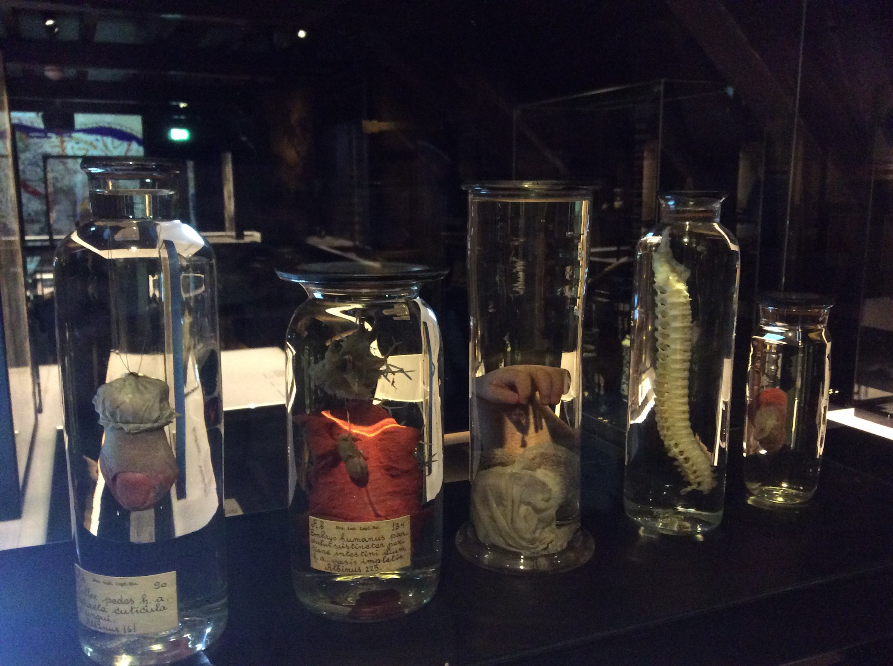
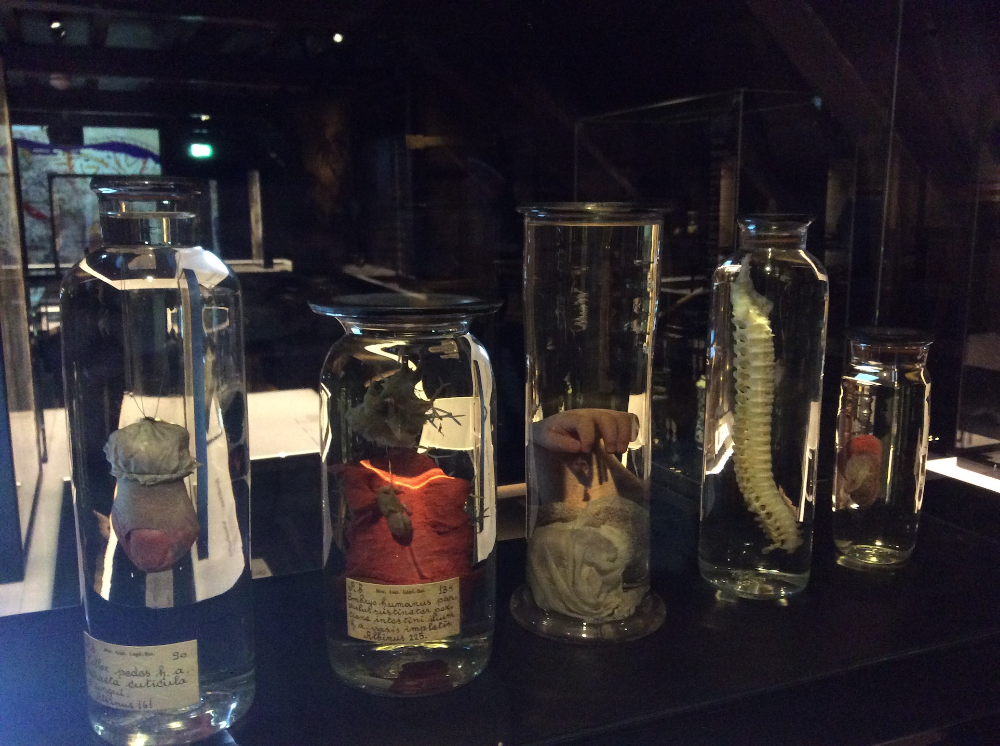

Joana Chicau
Jonathan Reus
Following from a shared interest in livecoding and real-time algorithmic performance, we propose a research investigation into techniques for in-situ processual dissection of machine learning algorithms. In this research project, we seek to better understand the habitual and fixed objects of machine learning as well as their terminologies, and provide counter-techniques for conditions of emergence, movement-centered engagement and becoming.
The anatomical theatre, which paralleled the emergence of the university as the premier learning institute in Europe, has been a time-space where bodies and their organ[isation] became spectacles of scientific knowledge. It informed and disseminated new classification systems and taxonomies, as well as a specific understanding of the body as a complex system reducible to its constituent parts.
In our processual approach, we aim to develop an online repository of terminology and techniques for a critical examination of the “anatomy” of learning and prediction processes, data corpus and models of machine learning algorithms. And explore, through performance practice, how such a toolkit can confront the idealized bodies of artificial intelligence, its static representational structures and learning processes, by bringing about the re-organization, sectioning and bringing-into-relation of such codes.
 


Ruysch's aims in creating his preparations were twofold: primarily to create useful, permanent aids for teaching and lecturing; and secondly to create a personal art form. In this respect he attempted to endow death with both elegance and moral value by using the light of science to penetrate the smallest fissures and membranes of the human body. Thus by inducing a sense of wonder he sought to transform death by imbuing it with the capacity to provide knowledge.
«The Indo-European root of the word score is sker, which means ‘to cut’. The term is thus linked to the notions of creating a notch and keeping a tally, which is exactly what the Old Norse root of the word means. There is, from the beginning, a double purpose inscribed in making a ‘score’, that of performing a certain action and that of producing a physical record of an abstract quality or quantity. The cut of the score, while splitting open the surface on which it is inscribed, fuses action with abstraction, making them indistinguishable. It inscribes a temporal dimension on that surface; the very act of inscription alchemically turns space into the physical expression of a certain duration.» Carlos Basualdo

"Animation designates the way in which mind acquires a locality in the spatial world, its spatialization, as it were, and together with its corporal support, acquires reality.
Edmund Husserl (1977:101)
“Live coding practitioners ask the audience to share the risk and the fascination of live making. By emphasising the risk of such making, these practices deliberately expose the body in flux, the body in constant negotiation with the environment and the instrument, itself in flux.” — Franziska Schroeder, The Pontydian Performance, The Performative Layer.
“Machine learning doesn't just make decisions without giving reasons, it modifies our very idea of reason that is, it changes what is knowable and what is understood as real It operationalises the two-world metaphysics of neoplatonism that behind the world of the sensible is the world of the form or the idea. A belief in a hidden layer of reality which is ontologically superior, expressed mathematically and apprehended by going against direct experience.”
~ Manifesto on Algorithmic Humanitarianism
“... our Western culture regularly conflates the idea of the musical work with music and views the work as fundamental to most musical activities ... " "And yet, many live coders realize that live coding – given its “live” nature" – does not concern itself with works, let alone “great works,” “masterworks,” or Gesamtkunstwerke."
~ Matthew Tift "... the purpose of this way of knowing is not to dominate the world, as is that of scientific knowledge, but to live well in it...”
~ Christopher Small ~ Musicking: The Meanings of Performing and Listening, 1998
“...the answer to many of the why-questions evoked by the materiality of the eighteenth-century Leiden anatomical preparations—most importantly, why do they look so distinctly different than modern anatomical preparations?—lies in aesthesis. Aesthesis is a term that occurs in eighteenth-century texts and dictionaries, albeit rather sparingly. It is not usually found in general and art dictionaries before the nineteenth century, but two examples appear in medical and philosophical dictionaries. In Barrow’s 1749 Dictionarium Medicum Universale: Or, a New Medicinal Dictionary, ‘aesthesis’ is explained as “to be sensible of, sensation, or the faculty or power of sensation.””
~~ Elegant Anatomy, The 18th Century Leiden Anatomical Collections. Marieke M.A. Hendriksen (2014)
Simplex sigillum veri: 'The simple is the sign of the true' ~ Herman Boerhaave Carl Linnaeus published his famous Systema Naturae in 1735, during his 3-year stay in the Dutch Republic, in which he also earned a degree in medicine, and closely worked together with Boerhaave.

"(...) Through poststructural and postmodern thought, then, the archival body is no longer ‘an ideal configuration.’ It is not stable nor can it perform stability when it holds fractured and fracturing histories. Although fractured, the center does not necessarily cease to be a dominating force."
(Braidotti, metamorphoses)
"The reversal of the relation between organ and function amounts to liberating use from every established teleology. The meaning of the verb chresthai here shows its pertinence: the living being does not make use of its body parts (Lucretius does not speak of organs) for some one predetermined function, but by entering into relation with them, it so to speak gropingly finds and invents their use. The body parts precede their use, and use precedes and creates their function. It is what is produced in the very act of exercise as a delight internal to the act, as if by gesticulating again and again the hand found in the end its pleasure and its “use,” the eyes by looking again and again fell in love with vision, the legs and thighs by bending rhythmically invented walking."
— Giorgio Agamben, The Use of Bodies pp. 51